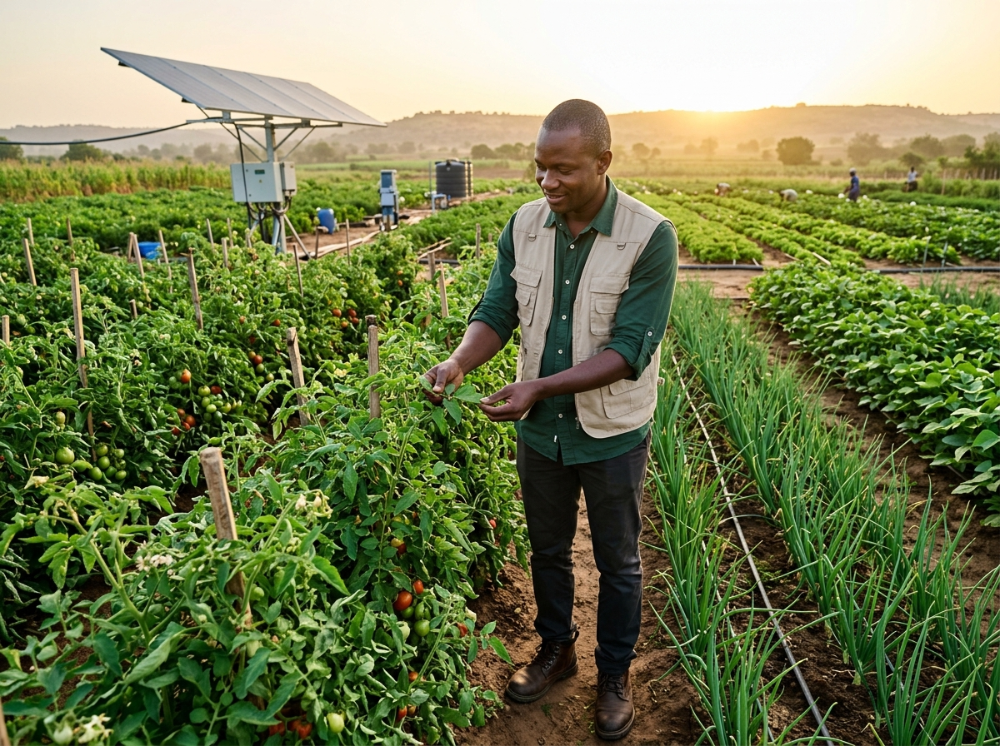
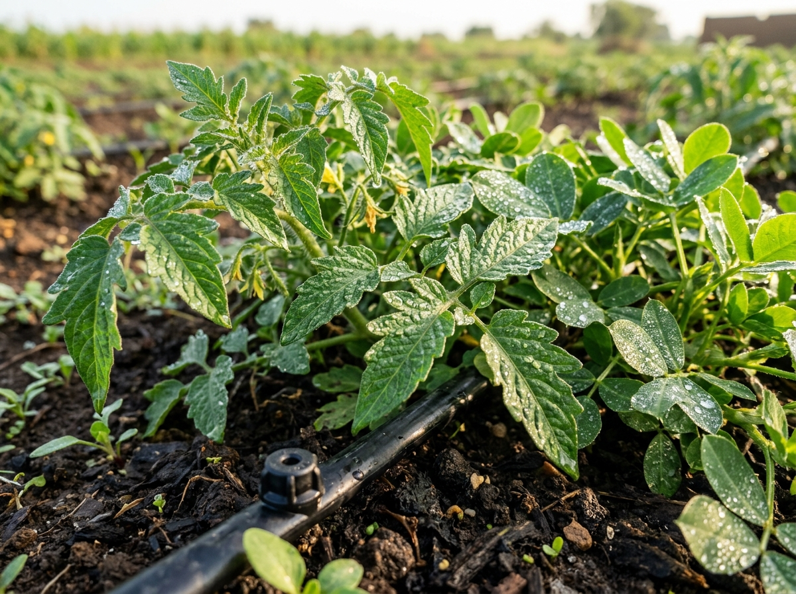

Des modèles adaptés à chaque filière agricole du Sénégal.
On ne pilote pas un champ d'oignons dans les Niayes comme une parcelle d'arachide pluviale dans le Bassin Arachidier. AgriImpact intègre les spécificités biologiques et économiques de vos cultures.
Tomate & Oignon : Protéger les cultures à haute valeur ajoutée
Dans la zone des Niayes et le long du fleuve, les attaques de mildiou (Phytophthora infestans et Pseudoperonospora destructor) peuvent anéantir une parcelle en 72 heures.
Tomate (Mongal RZ, Roma VF)
Surveillance du risque mildiou à l'aube et contrôle de l'irrigation au stade critique de floraison/nouaison pour éliminer le cul noir (nécrose apicale).
Oignon (Violet de Galmi, Safari)
Prévention du mildiou de l'oignon et arrêt programmé des apports azotés en phase de bulbaison pour garantir un séchage optimal et la conservation des bulbes.


Arachide & Maïs : Sécuriser la campagne pluviale
Dans le Bassin Arachidier (Kaolack, Fatick, Kaffrine), le succès dépend de la gestion des poches de sécheresse et de la synchronisation avec la date d'installation des pluies.
Arachide (Variétés 55-437, 73-33)
Suivi du stade clé de gynophorisation (J+40 à J+60). Alerte sur le durcissement du sol empêchant la pénétration des gousses et anticipation de la cercosporiose.
Maïs & Céréales Locales
Protection de la floraison mâle et de l'épiaison, période de sensibilité maximale où tout déficit hydrique fait chuter le rendement de 40%.
Coopératives & Périmètres Irrigués
Pilotez des dizaines de parcelles adhérentes avec une vision consolidée de la santé sanitaire et hydrique de l'ensemble de votre groupement.
Contacter notre équipe partenariats